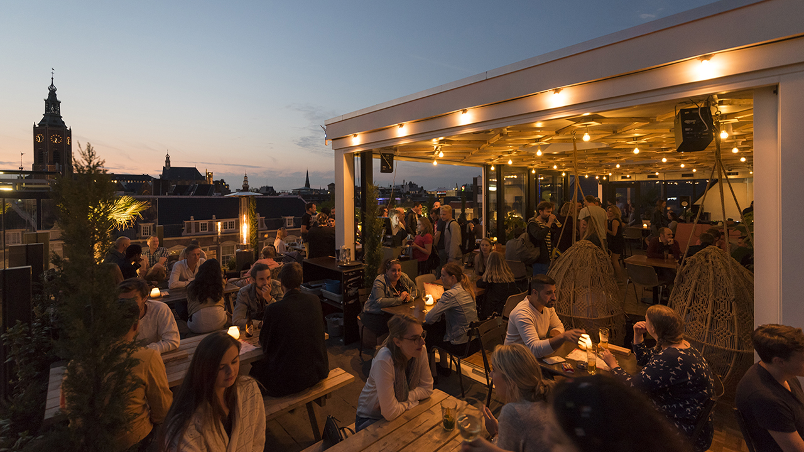
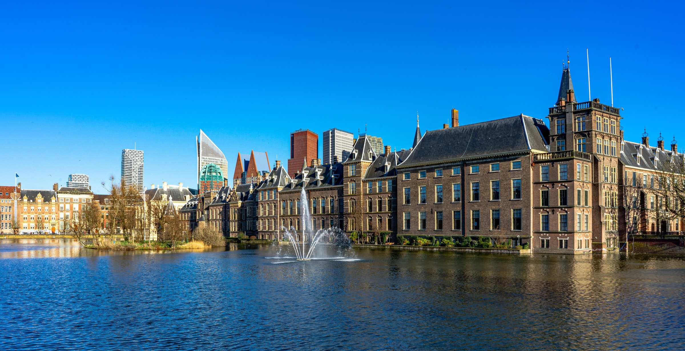
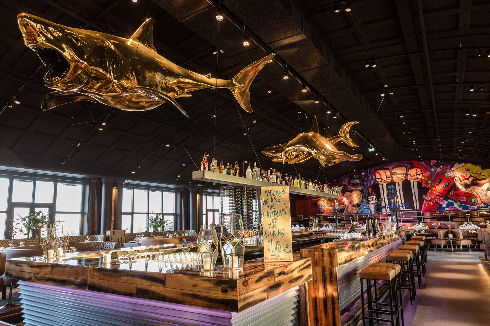
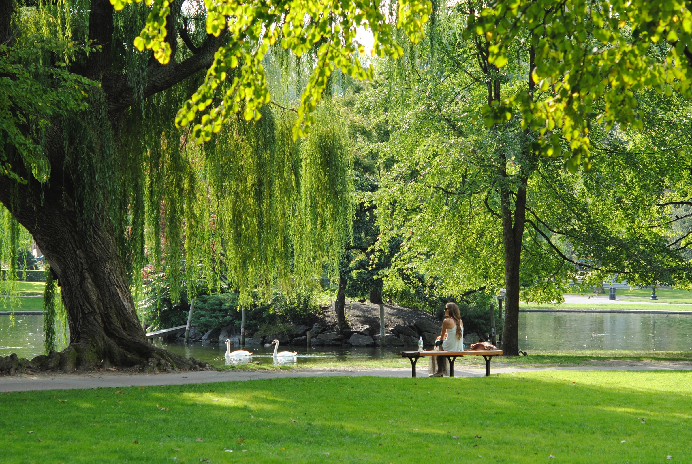

De beste tips voor Den Haag
10x leuke plekken voor een drankje in Den Haag
Wat te doen in Den Haag? 16x originele activiteiten
14x IJssalons in Den Haag! Heerlijk ijs halen doe je hier
De Tofste cocktailbars van Den Haag
Wat te doen in Den Haag? 16x originele activiteiten
De 10 beste Franse restaurants in Den Haag